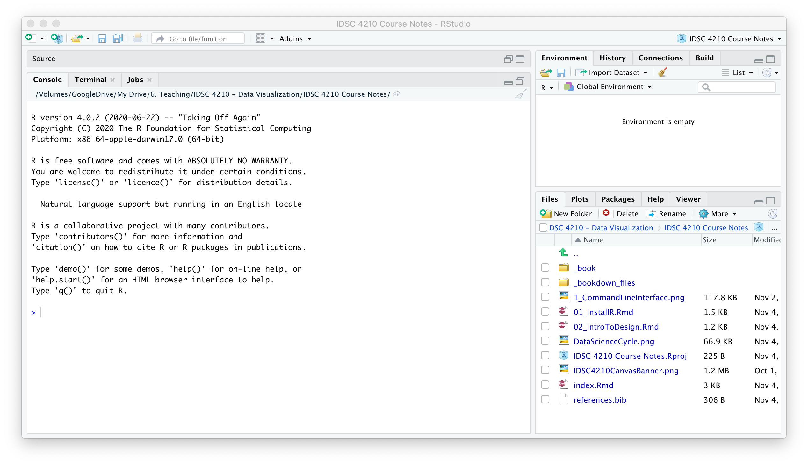
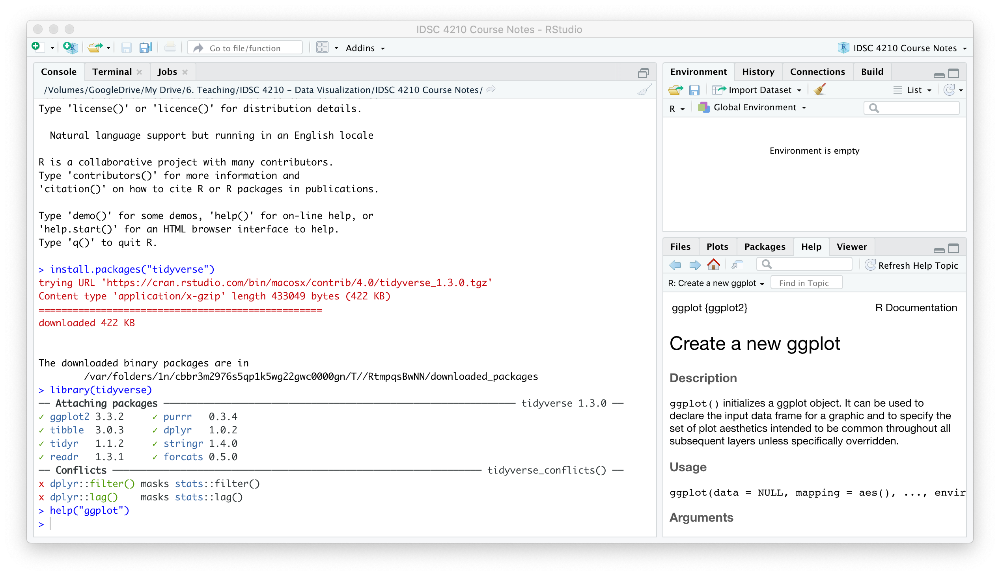

2 R and Datasets

2.1 Installing R, RStudio and Tidyverse
2.1.1 Step 1: Install R
In the first half of the course, we will use the statistical programming language R to construct our visualizations and gain familiarity manipulating data. R is very powerful, free open-source software.
Download the latest version of R (4.0.3 or later) from R-Project.org.
R is capable of handling massive datasets, querying databases in SQL, creating beautiful visualizations, running complex statistical analysis, and building state-of-the-art machine learning models. You can also easily switch between R and other software packages (like Python) in the same script.
2.1.2 Step 2: Install RStudio
You can interact with R via the command line, but the RStudio IDE (Integrated Developer Environment) offers a much better user experience. Download the latest version of RStudio from RStudio.com.
Once you have R and RStudio installed, open RStudio and it should look something like the figure below. We will only interact with R through RStudio in this course.

There are excellent resources online if you run into trouble; for example, search YouTube for “RStudio Installation.”
2.1.3 Step 2: Install the tidyverse (and ggPlot Visualization Package)
We will use the ggplot package developed by Hadley Wickham. We will also use a number of other commands for “data wrangling” (manipulating and working with datasets). Conveniently, these packages are all offered together in a “meta-package” called the tidyverse, which refers to a group of packages that handle data in a “tidy” way.
Type install.packages("tidyverse") in the Console in RStudio to install the tidyverse. RStudio will download the package from CRAN and install it for you.

The tidyverse packages are now installed on your computer (which you only have to do once) but you will have to load them every time you open RStudio.
Load the tidyverse with the command library(tidyverse).
library(tidyverse)## ── Attaching packages ────────────────────────────────────────────────────────────── tidyverse 1.3.0 ──## ✓ ggplot2 3.3.2 ✓ purrr 0.3.4
## ✓ tibble 3.0.3 ✓ dplyr 1.0.2
## ✓ tidyr 1.1.2 ✓ stringr 1.4.0
## ✓ readr 1.3.1 ✓ forcats 0.5.0## ── Conflicts ───────────────────────────────────────────────────────────────── tidyverse_conflicts() ──
## x dplyr::filter() masks stats::filter()
## x dplyr::lag() masks stats::lag()Then, check that it’s working by checking the help file for one of the tidyverse packages like ggplot. Type help("ggplot") and the help screen should pop up on the lower right hand tab. You can also search for help directly in this window.
2.2 Datasets for This Course
We will primarily be an excerpt of a set of real data on hotel stays from two hotels.[@antonio2019]